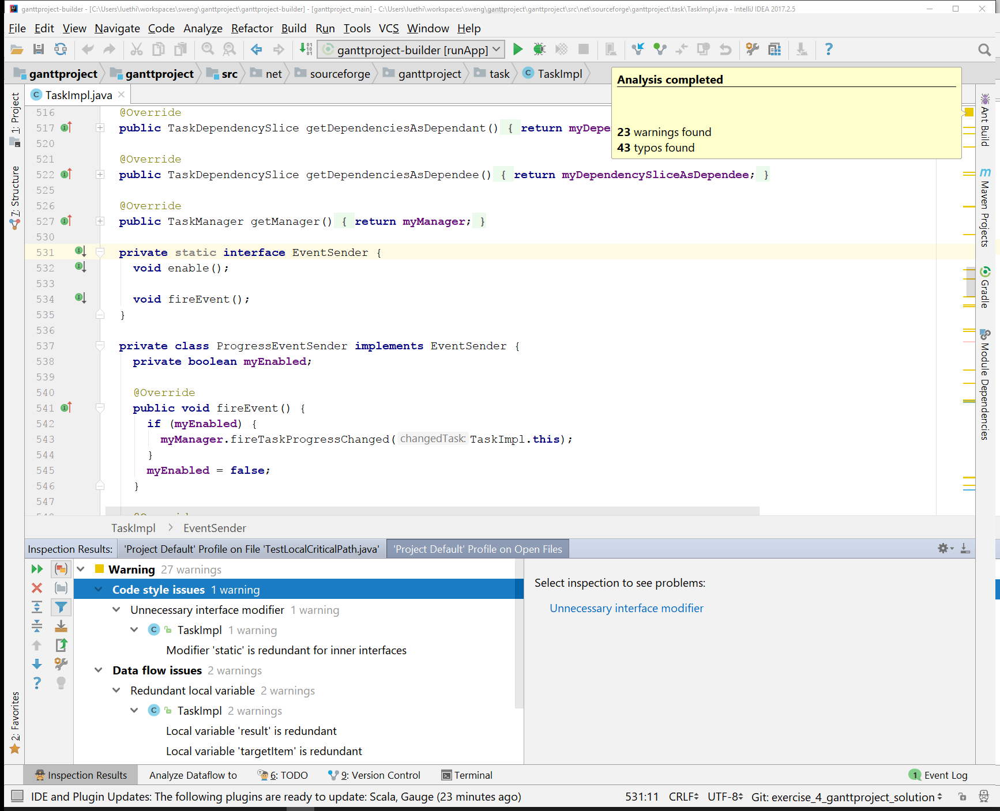
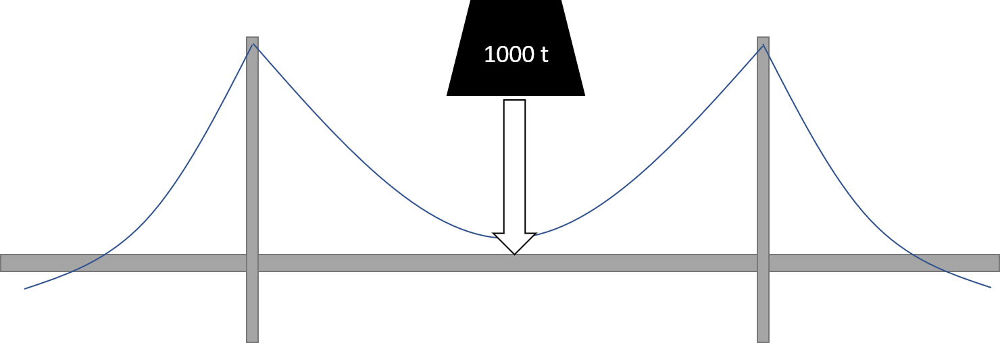

Verifikation von Software
Marcel Lüthi
Departement Mathematik und Informatik

Validierung und Verifikation
Validierung:
- Bauen wir das richtige Produkt?
- Können Nutzer die festgelegten Ziele erreichen?
Verifikation:
- Bauen wir das Produkt richtig?
- Erfüllt Produkt spezifizierte Eigenschaften ?
Beispiel: Zulassung Medizinprodukt
- Nachweis des medizinischen Nutzens
- Nachweis, dass Projekt die vorgeschriebene Funktion erfüllt.
Warum braucht es Validierung / Verifikation?
Nicht nötig in perfekter Welt!
- Fehler schleichen sich überall im Prozess ein
- No silver bullet: Keine Methode kann Fehler komplett verhindern
- Probleme:
- Unklarheiten / Mehrdeutigkeiten
- Falsche Annahmen
- Falsche Schlussfolgerungen / Fehler
- Fehler in Systemumgebung
Eigenschaften
- Antwort einer Verifikation muss nicht binär sein
- Software wird immer kleine Defekte enthalten
- Grad des Defekts ausschlaggebend
- Subjektiv oder Objektiv
- Schwierig Qualitätsmerkmale wie Benutzbarkeit objektiv zu messen
Hauptansätze für Verifikation
Analyse (statisch)
- Code reviews
- Automatisierte Codeanalyse
- Formales Analysieren der Eigenschaften
Experimentieren (dynamisch)
- Sample des Verhaltens durch Testen
- Ziel: Gegenbeispiel finden
- Manuelle Ausführung oder automatisierte Tests
Code review
Durchsicht des Programms durch andere Person(en)
Einige Best Practices:
- Entwickler/Designer präsentiert Code
- Durchspielen eines Test cases (Code walk-through)
- Review durch kleine Gruppe (3-5 Leute)
- Fokus: Fehler entdecken und nicht beheben
- Vordefinierte, feste Zeitdauer einplanen
- Ziel: Zusammenarbeit und Wissen verbessern, nicht Evaluation
- Manager sollten nicht Teil des Meetings sein (keine Evaluation)
(Statische) Codeanalyse
- Durchgehen vom Code. Prüfen auf typische Probleme.
- Uninitialisierte Variablen
- Index out of bounds
- Möglicher Zugriff auf null Werte
- ...
- Typische Probleme variieren je nach Programmiersprache
- Wird heute durch Tools unterstützt
Statische Analyse tools (e.g. in Intellij)
Testen
- Unverzichtbar um das Verhalten eines Programms zu überprüfen.
- Ist nie Beweis für die Korrektheit eines Programms.
Program testing can be used to show the presence of bugs, but never to show their absence!
Edgar Dijkstra (1970) "Notes On Structured Programming"
Testen - Fehlende Kontinuität
- Engineering: Bestandener Test mit 1000 t
- Schlussfolgerung: Tests mit kleinerer Belastung werden auch bestehen
- Software: Fehlende Kontinuität lässt keine solchen Aussagen zu
Beispiel: Fehlende Kontinuität
int binarySearch(T key, List<Double> list) {
int bottom = 0; int top = list.length(); int middle = 0;
while (bottom < top) {
if ((bottom + top) % 2 == 0) {
middle = (bottom + top) / 2;
} else {
middle = ??? /* fehlerhafte Berechnung */
}
if (key ≤ list.get(middle)) {
top = middle;
} else {
bottom = middle + 1;
}
}
}
- Funktioniert nur für Listen deren Länge 2er Potenz ist.
Ziele des Testens
- Trotz Limitierung führt kein Weg am Testen vorbei
- Auch hier ist Genauigkeit und Systematik wichtig.
Ziele:
- Fehler finden und isolieren
- Tests sollten wiederholbar sein
- Schwierigkeit: Zufallszahlen, Nebenläufigkeit, Systemumgebung
- Genauigkeit: Tests sollten die spezifizierten Eigenschaften genau testen.
Testing in the small vs Testing in the large

Unit Testing
Testen von Funktionalen Einheiten (Module)
- Häufig, aber nicht zwingend, automatisiert
- Unterstützung durch testing Frameworks (wie JUnit)
public class FoobarTest {
@Before
public void setUp() throws Exception {
// Code executed before each test
}
@Test
public void testOneThing() {
// Code that tests one thing
}
@After
public void tearDown() throws Exception {
// Code executed after each test
}
}
Testing in the small
Black box testing
- Funktionales Testen
- Partitionierung der Testfälle basierend auf Spezifikation
- Testen was das Programm machen sollte
White box testing
- Strukturelles Testen
- Partitionierung der Testfälle basierend auf interner Struktur
- Testen was das Programm macht
Unit Tests
- Was ist der Unterschied zwischen Validierung und Verifikation?
- Weshalb ist beides wichtig?
- Weshalb müssen sogar mathematisch exakte, formale Spezifikationen validiert werden?
- Weshalb kann die statische Analyse nur einen kleinen Teil der Fehler finden?
- Was ist gemeint damit, dass wir uns beim Testen nicht auf Kontinuität verlassen können?
- Was ist der Unterschied zwischen "Testing in the Small" und "Testing in the Large"